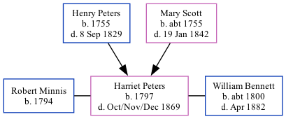

Harriet Bennett (née Peters) 1797 - 1869
[ Home ] | [ Calendar ] | [ Surnames Index ] | [ Family History ]The child of Henry Peters and Mary ScottHarriet Peters, the four times great-aunt of Nigel Horne, was born in Folkestone, Kent, England in 17971. She was married twice - to Robert Minnis (on Jun 29, 1816 in Folkestone) William Bennett (on Nov 17, 1844).
She died in Oct/nov/dec 1869 in Elham, Kent, England1.
Parents
- Henry was born in 1755
- Mary was born c. 1755
Citations
- England & Wales, FreeBMD Death Index: 1837-1915 Online publication - Provo, UT, USA: The Generations Network, Inc., 2006.Original data - General Register Office. England and Wales Civil Registration Indexes. London, England: General Register Office. © Crown copyright. Published by permission of the Cont
Media
Harriet Peters - William Bennett - Marriage Certificate

Family Tree
Generated by ged2site. Last updated on Nov 13, 2024